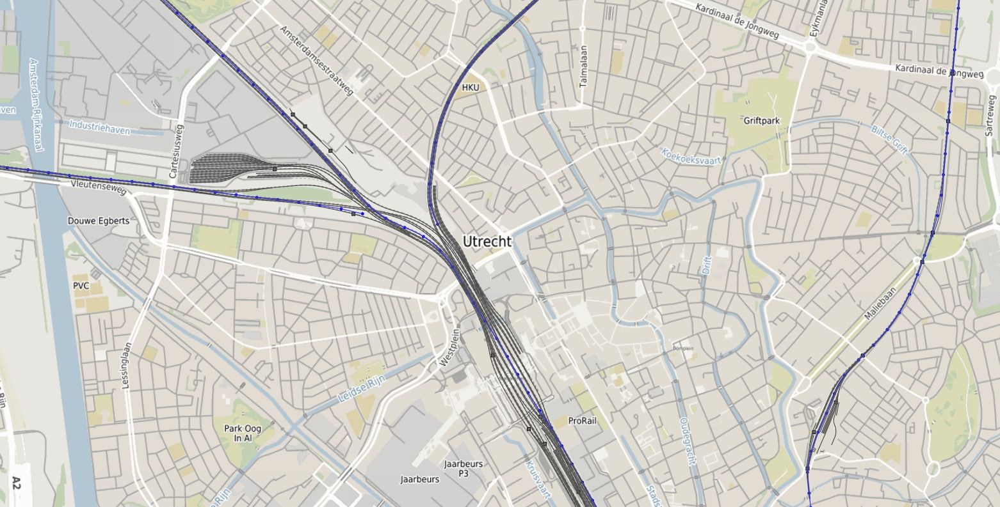
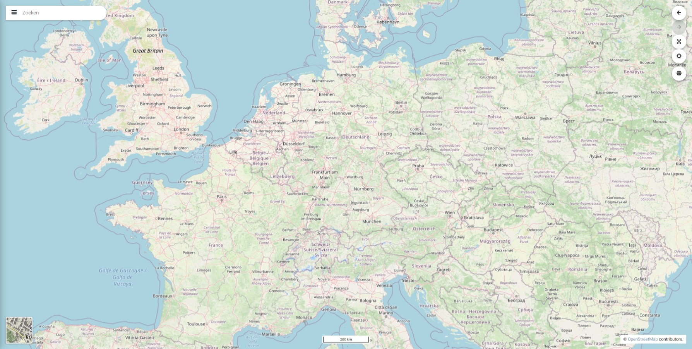
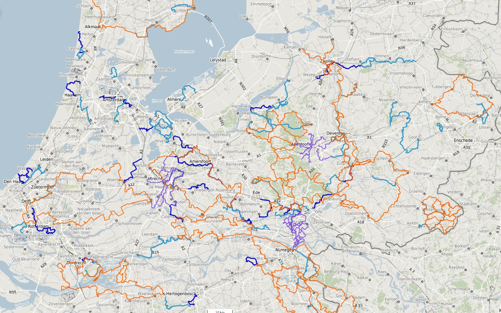

Cook
De COOK Geo Viewer is de snelste van Nederland en daar zijn we trots op. Naast snel, zijn onze viewers veilig, compleet en gepersonaliseerd. Wij werken met open source voor onze geo-registratie en publicatie, dat geeft een sterke fundering. Want hierdoor kunnen wij informatiestromen uit verschillende systemen raadplegen, combineren en inzichtelijk maken. Welke kaartlaag u (geanalyseerd) wilt zien bepaalt u zelf.

ANH3 Hoogtekaart.
Point Cloud

Antarctica.
Placeholder
Spoorwegen.
Placeholder
World.
Placeholder
Wandelroutes.

Terrain.

Bonnebladen.

Wind turbines.